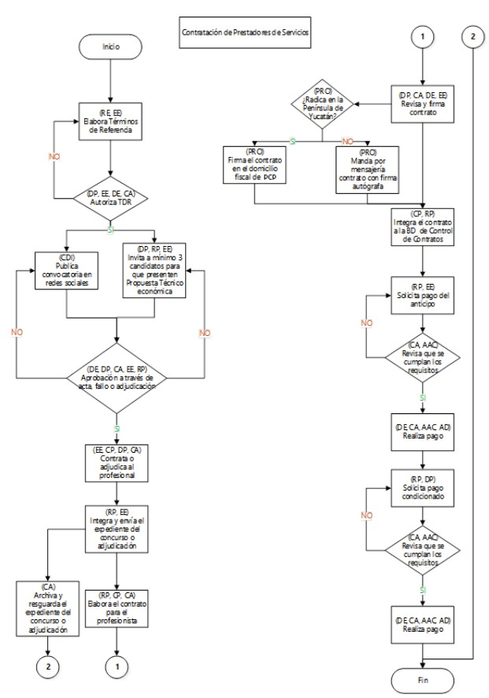
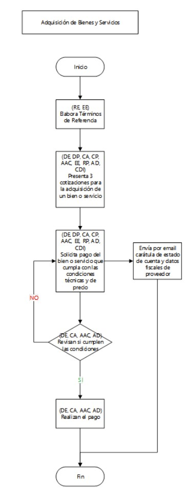

Políticas Operativas
Elaboración de TDR y Documentación Básica del Consultor
El responsable del proyecto o enlace externo elabora los términos de referencia (TDR) para contratación de consultorías, profesionista y adquisición de bienes muebles, con base en el formato anexo y a partir de los objetivos y resultados esperados para cada proyecto, en concordancia con el presupuesto aprobado (se sugiere indicar moneda nacional). Cada TDR deberá incluir criterios de evaluación de la consultoría, así como las condiciones de pago.
Montos menores a $50,000 no necesitan TDR, ni contrato, siempre y cuando se cuente con una propuesta técnico-económica completa para el caso de prestación de servicios profesionales o, de una cotización para el caso de compra de algún bien.
🗺️ Ver Diagrama de Flujo: Contratación de Prestadores de Servicios

📋 Lista de Documentación Obligatoria (Candidato a Profesionista)
Los TDR especificarán que el candidato a profesionista deberá anexar la siguiente documentación:
a. Curriculum Vitae o portafolio profesional.
b. Acta constitutiva en caso de persona moral.
c. Poder del representative legal en caso de persona moral.
d. Constancia de situación fiscal con una antigüedad menor a tres meses.
e. Opinión de cumplimiento fiscal con una antigüedad menor a tres meses.
f. Identificación oficial vigente del candidato a profesionista o del representante legal.
g. CURP del candidato a profesionista.
h. Comprobante de domicilio con una antigüedad menor a tres meses.
i. Carátula de estado de cuenta bancaria a la que se realizarán los pagos correspondientes.
j. Al menos dos cartas de recomendación o referencias profesionales.
k. Propuesta técnico-económica, la cual debe contemplar los gastos de viaje, viáticos y hospedaje.
⚠️ Protocolo ante Opinión de Cumplimiento Negativa
En caso de que la opinión de cumplimiento fiscal del candidato a profesionista sea en sentido negativo, la contratación podrá continuar siempre y cuando:
Filtros de Techos Presupuestales y Selección
2. (coordinador de administración, director ejecutivo, directora de programas): Para equipos con un costo mayor a $50,000 y contrataciones que tengan un techo presupuestal igual o mayor a $150,000 pesos, se enviarán por correo los TDR al director ejecutivo para su revisión y firma de aprobación en un plazo no mayor a 5 días hábiles. Los TDR correspondientes a Proyectos administrados deberán ser aprobados por el enlace externo y/o responsable del proyecto.
3. (coordinadora de desarrollo institucional, enlace externo): En su caso, publica la convocatoria en redes sociales durante 5 a 7 días hábiles, anexando los TDR y el formato para la presentación de propuestas técnico-económicas.
4. (directora de programas, responsable del proyecto, enlace externo): En su caso, invita a cuando menos a 3 candidatos que posean la experiencia, perfil y capacidad profesional probada para presentar una propuesta técnico-económica.
El comité (integrado por 3 personas) revisa y evalúa las propuestas para seleccionar a través de un Acta de evaluación de candidatos, fallo o adjudicación directa. Se tendrán 3 días hábiles una vez terminado el plazo señalado en la política 3 para dicha selección.
Adjudicación Directa:
• Debe estar debidamente justificada en el Acta.
• Deberá ser revisada y firmada de forma obligatoria por directora de programas y director ejecutivo.
• El monto máximo para una adjudicación directa será de $200,000 pesos.
Integración de Expedientes y Tiempos de Redacción
6. (responsable del proyecto, enlace externo): Integra y, en el caso del enlace externo, envía a PCP al correo electrónico convenido, un expediente del concurso o adjudicación, que contendrá:
• a. TDR con su autorización.
• b. En el caso de los supuestos señalados en la política operativa 2, se tiene que incluir el TDR con la autorización de director ejecutivo.
• c. Propuestas técnico-económicas incluyendo la documentación solicitada en el TDR.
• d. Cuadro de evaluación de candidatos.
• e. Acta de evaluación de candidatos, fallo o adjudicación.
Elabora contrato correspondiente con base en los formatos respectivos anexos. Una vez que se cuenta con toda la documentación y se tiene seleccionada la mejor propuesta, se tienen tres días hábiles para la elaboración del contrato.
Nomenclatura oficial:
PCP-núm del contrato-fecha de inicio de contrato.
Orden Jerárquico de Firmas y Validación
9. (directora de programas, coordinador de administración, director ejecutivo, profesionista): Revisa y firma contrato en el siguiente orden estricto:
a) directora de programas → b) coordinador de administración → c) profesionista → d) director ejecutivo.
• Los contratos menores a $50,000 podrán ir firmados solo por directora de programas o coordinador de administración.
• Todo contrato mayor a $150,000.00 pesos deberá ser firmado por el director ejecutivo.
• directora de programas y coordinador de administración tienen 2 días hábiles para liberar contrato firmado una vez recibido. Para la firma de director ejecutivo se tienen 5 días hábiles.
🗺️ Ver Diagrama de Flujo: Proceso de Firmas y Control
Integra el contrato a la Base de Datos de Control de Contratos para dar seguimiento estricto a las políticas operativas 12, 13 y 14.
Solicitudes y Cierre de Calendario Bancario
12. (responsable del proyecto, directora de programas): Solicita el pago condicionado a la entrega de un producto o servicio a través del SURF que debe incluir la factura o recibo deducible y la carta de satisfacción técnica firmada por el responsable del proyecto y por directora de programas. Enlace oficial de acceso:
http://189.206.164.249:9083/Siankaan-0.1/security/login.
13. Dispersión (director ejecutivo, coordinador de administración, analista administrativo contable, asistente de la dirección): Realizan el pago al profesionista o para la adquisición de bienes y servicios los jueves o viernes de cada semana, siempre que la solicitud se haya hecho a más tardar el martes inmediato anterior y el analista administrativo contable verifique la factura conforme al contrato. El analista administrativo contable y/o el coordinador de administración suben los pagos a los portales bancarios para su ejecución mancomunada por parte del director ejecutivo.
Todo pago mayor a $2,000 se realizará única y exclusivamente a una cuenta bancaria a nombre del emisor de la factura correspondiente. No se harán reembolsos que incumplan esto. No se podrán fraccionar las facturas mayores a $2,000 pesos.
💳 Uso de Tarjeta de Crédito Institucional
Deberá hacerlo la asistente de la dirección, previa autorización por escrito del director ejecutivo, con base en la solicitud en SURF, anexando Formato de pago con TC y una guía de pasos para la aplicación en el portal del proveedor. Los pagos con otras tarjetas de crédito sólo podrán hacerse previa autorización expresa, por escrito de la directora de programas, o el coordinador de administración y el director ejecutivo. En caso de ser reembolso, se necesita contar con las facturas para realizar el pago correspondiente.
✈️ Comprobación General y Requisitos
• Los gastos de viaje deben ajustarse al tabulador.
• Alimentos en SURF requieren incluir itinerario de actividades.
• Hospedaje requiere incluir reservación en SURF (excepto hoteles en la tabla o con convenio).
• Plazo máximo de comprobación: 7 días naturales tras concluir la actividad. No se aprobarán recursos adicionales hasta comprobar el anterior.
Filtro de Cotización de Bienes y Servicios
14. (director ejecutivo, directora de programas, coordinador de administración, coordinador de proyectos, responsable del proyecto, analista administrativo contable, enlace externo, asistente de la dirección, coordinadora de desarrollo institucional): Solicita dos cotizaciones para la adquisición de un bien o servicio con base en los TDR, cuando aplique (ejemplo: compra de equipos de cómputo, mobiliario, talleres, trabajo en campo). Las 2 cotizaciones deben ser comparables entre sí y del mismo bien.
15. Tramitación: Solicita el pago del bien o servicio que mejor cumple con las condiciones técnicas y de precio, justificándolo adecuadamente a través del SURF y con el visto bueno de la directora de programas. Envía un correo al analista administrativo contable con la carátula de estado de cuenta y datos fiscales del proveedor para realizar el alta en el SURF.
16. Execution: Realizan el pago bajo las condiciones estipuladas en la política operativa 13.
🗺️ Ver Diagrama de Flujo: Adquisición de Bienes y Servicios

La gasolina se dispersará en las tarjetas correspondientes que el coordinador de administración o el analista administrativo contable entreguen. La dispersión de gasolina se realizará al momento de la entrega del vehículo siempre y cuando ya se cuente con la SURF correspondiente.
Excepción: Para casos específicos podrá haber excepción en la dispersión a través de las tarjetas; en esos casos, podrá solicitarse reembolso siempre y cuando el pago se realice con tarjeta de crédito/débito y se tenga la factura correspondiente.
Tabulador Oficial de Viajes y Viáticos
Límites máximos de viáticos y transporte aprobados para comisiones oficiales.
🍔 Alimentos
| Concepto | Cantidad Máxima Autorizada (M.N.) |
|---|---|
| Desayuno | $200.00 (Doscientos pesos 00/100 MXN) |
| Comida | $200.00 (Doscientos pesos 00/100 MXN) |
| Cena | $200.00 (Doscientos pesos 00/100 MXN) |
🏨 Hospedaje (Habitación doble)
| Destino / Hotel Convenio | Cantidad Máxima Autorizada (M.N.) |
|---|---|
| Cancún | $1,200.00 (Mil doscientos pesos 00/100 MXN) |
| Playa del Carmen | $1,200.00 (Mil doscientos pesos 00/100 MXN) |
| Tulum (El hotelito) | $1,200.00 (Mil doscientos pesos 00/100 MXN) |
| Felipe Carrillo Puerto (Turquesa Maya) | $800.00 (Ochocientos pesos 00/100 MXN) |
| Felipe Carrillo Puerto (Ceiba) | $700.00 (Setecientos pesos 00/100 MXN) |
| Felipe Carrillo Puerto (Esquivel) | $750.00 (Setecientos cincuenta pesos 00/100 MXN) |
| Chetumal | $750.00 (Setecientos cincuenta pesos 00/100 MXN) |
| Xpujil | $600.00 (Seiscientos pesos 00/100 MXN) |
⛽ Asignación de Combustible en Litros (Viaje Sencillo)
| Ruta Destino | Vehículo: GOL | Vehículo: NP300 | Vehículo: OROCH |
|---|---|---|---|
| Playa del Carmen | 6 Litros | 7 Litros | 5 Litros |
| Tulum | 11 Litros | 12 Litros | 9 Litros |
| Felipe Carrillo Puerto | 18 Litros | 20 Litros | 15 Litros |
| Chetumal | 30 Litros | 34 Litros | 24 Litros |
| Xpujil | 36 Litros | 40 Litros | 29 Litros |
| Mérida | 25 Litros | 28 Litros | 20 Litros |
| Campeche | 37 Litros | 42 Litros | 30 Litros |
🚖 Servicios de Taxi y Transporte Aéreo
| Concepto de Traslado | Cantidad Máxima Autorizada (M.N.) |
|---|---|
| Aeropuerto - Hotel | $600.00 (Seiscientos pesos 00/100 MXN) |
| Hotel - Aeropuerto | $300.00 (Trescientos pesos 00/100 MXN) |
Bebidas alcohólicas • Alimentos o bebidas que no se justifiquen en función de la actividad profesional realizada • Artículos de uso personal, de higiene y entretenimiento • Multas y sanciones económicas impuestas por las autoridades • Gastos y deducibles no cubiertos por el seguro de los vehículos derivados del uso inapropiado de los mismos, consumo de alcohol y/o drogas, negligencia, falta de licencia de conducir, y otros • Gastos por trámites migratorios personales, emisión de pasaportes, visas, licencias de conducir, entre otros • Gasolina pagada en efectivo • Gastos propios mayores a $2,000.00 M.N. pagados en efectivo • Propinas • Cualquier gasto no relacionado directamente con la actividad profesional o que no cumpla con lo establecido en el Proceso Administrativo para la Execution de Proyectos y otras políticas o disposiciones de la Asociación.
Datos Fiscales Institucionales
Use esta información exacta al requerir comprobantes fiscales a proveedores del proyecto:
PRO CONSERVACION PENINSULAR A.C.
PCP180523FK2
Correo electrónico propio
Formatos y Anexos de Control Interno
Haga clic en el elemento para redirigirse al almacén digital de plantillas institucionales oficiales.